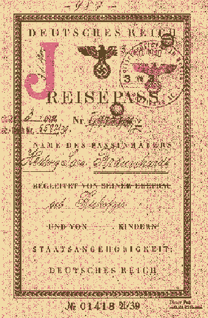
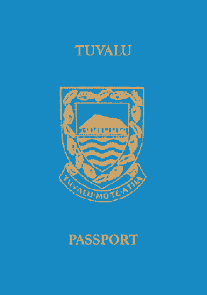
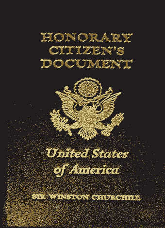

Rasterized offset
Rasterized offset Image made up of very small dots or lines. Definitely easy to see with a magnifying glass. The page number in this image is rasterized offset. Fugitive ink
Ink that can be erased with water. Perforated
An image (in most cases a number) that is punched into the passport.
 Letterpress
Letterpress A printing technique that can be compared to stamping. The pressure with which the ink hits the paper creates greasy, not sharply cut edges on the sides of the image, which is not always clearly visible even with a magnifying glass. Fluorescerende inkt
Inkt die oplicht onder ultraviolet licht. De notenbalk is een duidelijk voorbeeld. Shadow watermark
A watermark with thick, gray lines.
 Iris print
Iris print Print where one color flows smoothly into the other Machine writing
Text typed with a typewriter or printer. With modern techniques it is often difficult to see the difference between the two. Microprinting
Vit extremely small print composed lines or figures. The letters can only be distinguished through a magnifying glass.
 Offset
Offset In contrast to letterpress printing, the image with offset is more even. Even when viewed under a magnifying glass, it looks sleek, without pressure edges. The difference between offset and letterpress is difficult to determine with current printing techniques. The silhouette in the center of the image is a good example of offset. Two tone line watermark
A watermark with both thick and thin linen. Here you can clearly see the rosettes.
 Plate printing
Plate printing Print where the ink lies on top of the paper. To feel good. Line watermark
A watermark composed of thin linen.
 Embossing
Embossing Pressure where, as it were, a must is pressed into the paper. Compare to a dry stamp, but applied by machine and not by hand. Larger formats are therefore possible.  Simultaneous pressure
Figures that are printed in the same place on either side of the page and that overlap or complement each other exactly when the page is held up to the light. The new Swiss passport is a good example of this: the only difference is the black page number at the bottom right. Reisepas
On October 5, 1938, just before the start of WWII ,Germany’s Reich Ministry of the Interior invalidates all passports held by Jews, became valid only after letter “J” has been stamped. By autumn 1938, all Jewish passports were stamped with red letter “J” for Jew. Jewish German passports with J are very rare and collectible.
 Screen printing
Screen printing Pressure that is created because the ink has been pressed through a sieve, as it were. The image and the letters are therefore made up of dots (when viewed through a magnifying glass).
 Dry stamp
Dry stamp An image that is manually printed onto the paper or into the photo without ink with great force. The 'blemishes' that form that image can not only be seen, but can be felt even better.  Ink stamp
An image that is applied with a stamp with ink. The size is virtually unlimited. Notebook stitch
A stitch that holds the pages of the passport together in large loops. The thread can be seen in the center of the two center pages of the passport. British Indian Passport
The British Indian passport was a passport, proof of national status and travel document issued to the British subjects of the British Indian Empire, British subjects from other parts of the British Empire, and the subjects of the British protected states in the Indian subcontinent (i. e. the British Protected Persons of the ‘princely states’). The title of state used in the passport was the “Indian Empire” which covered Aden, Ceylon, Pakistan, Bangladesh, Burma, and non French and Portuguese India. The use of the passport was discontinued in Aden and Burma in 1937, on becoming independent colonies, and in 1948 in the new Dominions of Ceylon, India and Pakistan. In India, The use of passports was introduced to the British Raj after the First World War. The Indian Passport Act of 1920 required the use of passports, established controls on the foreign travel of Indians, foreigners travelling to and within the Presidencies and Provinces of British India.  1963 Churchill US passport
On april 9th, 1963, a deeply moved Sir Winston Churchill, sitting in his London home with his wife beside him, watched a satellite relay of a White House ceremony giving him honorary US citizenship.
 Pharaoh passport
Pharaoh passport In 1976, Ramesses II (also known as Ramesses the Great, was the third pharaoh of the Nineteenth Dynasty of Egypt), his remains were issued an Egyptian passport (nearly 3 thousand years after his death) so that he could be transported to Paris for an irradiated treatment to prevent a fungoid growth.
 "Beautiful Passport"
"Beautiful Passport" New Zealand's passport is a true reflection of the country's Maori heritage and stunning landscapes. It incorporates traditional Maori designs and vibrant colors, making it an artful representation of the nation's cultural diversity. Contrast strip
To prevent a photo or text from being removed, a foil (plastic layer) is sometimes applied to a page. To hold the foil, the foil is sewn and folded. This creates a narrow 'contrast strip' of the same foil on the other side of the binding.